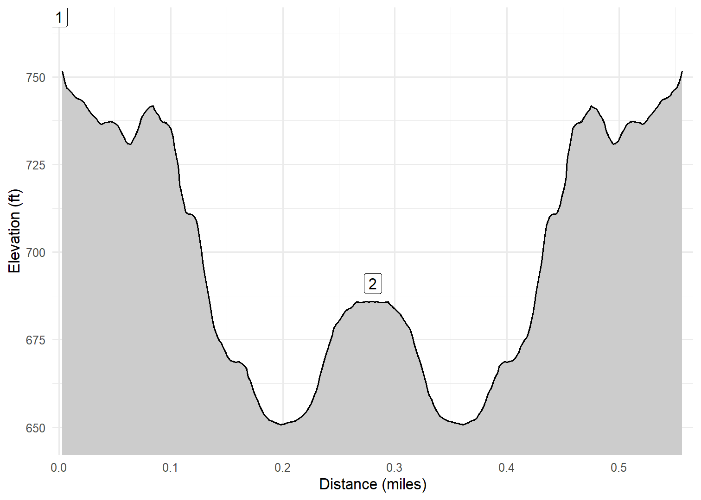

Door Bluff Headlands County Park
On our first full day in Door County (April 15, 2023), we decided to check out a couple of smaller county parks. The first stop was at Door Bluff Headlands County Park, sometimes called Death’s Door. We hiked only a short distance through the cedar trees along the bluff with some gorgeous views of Green Bay (which gave us a clear understanding of where it’s name came from!).
Walk-Specific Map
Elevation Profile

Images

DCDTHDRBLF: Typical scenery Spring 2023

DCDTHDRBLF: Cash on the trail

DCDTHDRBLF: View to Green Bay

DCDTHDRBLF: View to Green Bay

DCDTHDRBLF: The three of us

DCDTHDRBLF: Kim with Green Bay
GPX Download
A sanitized GPX file of our hike is here.
Summary Information
| NUM | trackID | Primary | Description | Distance | CumDist | DeltaElev |
|---|---|---|---|---|---|---|
| 1 | DCDTHDRBLF | Death Door Bluff County Park | Lake overlook to Parking area | 0.28 | 0.28 | -76 |
| 2 | DCDTHDRBLF | Death Door Bluff County Park | Parking area to Lake overlook | 0.28 | 0.56 | 76 |